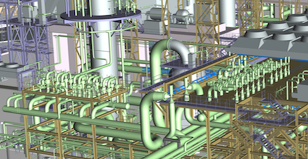
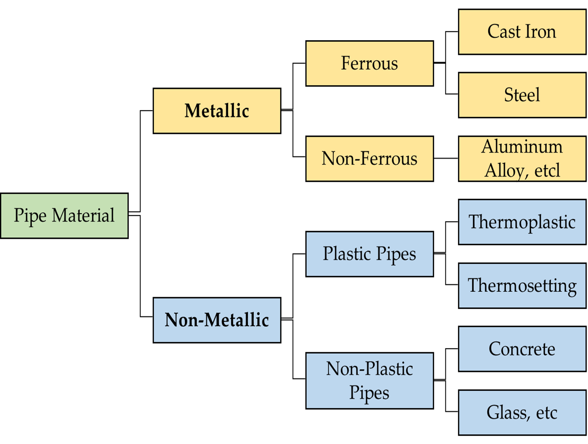
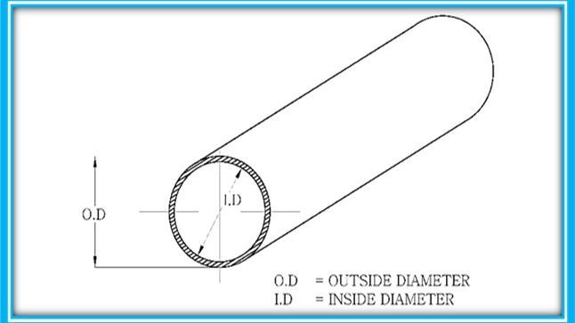
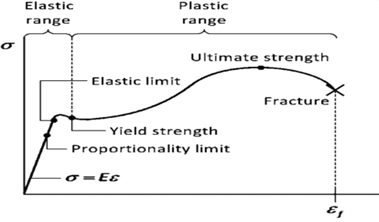

Pipe Properties

In the long history of human civilisation, the design of piping networks has been practised for thousands of years — bamboo irrigation pipes were used in China as early as 3000–2000 BC. Rapid development came in the 19th century, with a major advance in pipe stress theory in 1934 when R. H. Tingey published "Method of Calculating Thermal Expansion Stresses in Piping".
Today, a piping system is pipe sections joined with fittings, valves, and equipment, supported by hangers and supports. Pipe is just one element of the complete system. This module covers the fundamental properties of pipe and the materials used in Oil & Gas.
What You Will Learn
- The classification of pipe materials — metallic and non-metallic
- Pipe sizes — NPS, DN, OD, inside diameter, schedule numbers
- Key pipe formulas: wall thickness, weight, moment of inertia, section modulus
- Worked examples for pipe property calculations
- Key mechanical, physical, and electrical properties of pipe materials
- Post Weld Heat Treatment (PWHT) — purpose and code requirements
Lesson 1.1Pipe Material Classification
1.1.1 The Two Main Categories
Materials widely used for pipes and their components fall into two main categories:
- Metallic — divided into Ferrous and Non-Ferrous. Ferrous groups into cast iron and steel; non-ferrous covers aluminium, nickel, copper, etc.
- Non-metallic — Plastic pipes (thermoplastic and thermosetting) and non-plastic pipes (typically concrete and glass).

1.1.2 Ferrous Metallic Pipe — Cast Iron
Cast iron is an alloy of iron and carbon with carbon content above 2 wt%, often combined with silicon, nickel, or chromium to improve corrosion resistance. It is strong in compression but low in ductility and malleability, and very brittle — unsuitable for pressure piping. The most common types are white and grey cast iron; magnesium and cerium are added to increase ductility.
- Application: sewer systems — not Oil & Gas process piping.
- Key specifications: ASTM A-74 (cast iron soil pipe), ASTM A-888 (hubless cast iron), ANSI B16.45 (cast iron fittings).
1.1.3 Ferrous Metallic Pipe — Ductile Iron
Ductile iron is stronger and tougher than cast iron — a high-carbon magnesium-treated product containing graphite as spheroids, giving significantly better impact resistance and ductility than grey cast iron.
- Application: sewage service and potable water distribution — not used for process hydrocarbon piping.
- Key specifications: ASTM A716, ASTM A746, AWWA C150.
1.1.4 Carbon Steel Pipe — The Workhorse of Oil & Gas
Carbon steel is the most popular and widely used pipe material in Oil & Gas — wide availability, high strength, and a huge range of connection systems and fittings. Steel is an alloy of iron with no more than 2 wt% carbon.
By the amount of oxygen removed during steelmaking (deoxidising), steel is categorised as Killed Steel (fully deoxidised), Semi-Killed Steel (partially deoxidised), and Rimmed Steel (no deoxidising agent, carbon 0.12–0.15%).
Three general groups by carbon content:
- Low Carbon Steel: 0.05–0.25% carbon
- Medium Carbon Steel: 0.25–0.50% carbon
- High Carbon Steel: 0.50% and greater
Manufacturing Methods & Their Impact on Pipe Quality
| Type | Description | Weld Joint Factor (Ej) | Typical Use |
|---|---|---|---|
| Seamless (SMLS) | No welding. Produced by piercing a solid billet. Homogeneous, no weld stress — the strongest type. | 1.0 | High-pressure, high-temperature, sour service, critical process lines |
| Electric Resistance Weld (ERW) | Coil formed into a cylinder, seam welded by high-frequency electrical resistance at ~2600°F. Weld heat-treated to remove residual stress. | 1.0 (with full NDE) | General purpose, utility lines, moderate pressure |
| Double Submerged Arc Weld (DSAW) | Plate formed into a cylinder, welded inside and outside by submerged arc. 100% wall penetration. | 1.0 (with full NDE) | Large bore NPS 16+, high-pressure pipelines, plant headers |
| Spiral Welded | Coil rolled at an angle, spiral seam welded. Historically low pressure; now available for high pressure with advanced welding. | 0.8–1.0 | Large diameter lower-pressure applications, casings |
The Longitudinal Weld Joint Quality Factor (Ej) must be included in all wall thickness calculations — see Module 5, Lesson 5.1. A lower Ej means a thicker wall for the same pressure. This is why seamless pipe is specified for critical high-pressure service.
Key Carbon Steel Specifications
| Spec | Description | Grade / Strength | Temp Range |
|---|---|---|---|
| ASTM A106 | Seamless CS pipe for HIGH-temperature service. The most widely specified process pipe in O&G. | Gr. A: 30/48 ksi · Gr. B: 35/60 ksi · Gr. C: 40/70 ksi (SMYS/SMTS) | −29 to 427°C |
| ASTM A53 | Seamless & ERW, black and hot-dipped galvanised. Type F (furnace butt-weld), E (ERW), S (seamless). Type F is Category D fluid service only. | Gr. A & B — same as A106 Gr. A & B | −29 to 343°C |
| ASTM A333 | Seamless & welded CS pipe for LOW-temperature service. 11 grades with differing chemistry and impact toughness. | Gr. 6: 35 ksi SMYS to −45°C · Gr. 1: 30 ksi to −45°C | Down to −45°C (Gr. 6) |
| API 5L | Seamless & welded line pipe for gas, water, oil pipelines. PSL 1 (basic) and PSL 2 (stringent, with impact testing). | X42 to X80 (yield in ksi) | −29 to 121°C (std) |
1.1.5 Alloying Steel — Why Elements Are Added
Carbon steel is alloyed with other elements to improve properties for specific service. Common alloying elements and their effects:
| Element | Effect on Steel Properties |
|---|---|
| Carbon | Higher C = higher strength and hardness, but lower ductility, toughness, and weldability. Lower C = better weldability. |
| Chromium (Cr) | Hardening element. Increases oxidation, abrasion, and high-temperature hydrogen attack resistance. With Nickel gives superior properties. |
| Molybdenum (Mo) | Increases creep resistance and high-temperature strength; improves pitting resistance. Key in chrome-moly steels (P11, P22, P91). |
| Nickel (Ni) | Ferrite strengthener and toughener. Increases strength, toughness, fatigue resistance. Key in stainless and low-temperature alloys. |
| Manganese (Mn) | Present in all commercial steels. With sulphur, improves impact toughness. |
| Copper (Cu) | Increases atmospheric corrosion resistance and yield strength; scavenges sulphur. |
| Silicon (Si) | Deoxidiser — captures dissolved oxygen, avoids porosity, improves castability. |
| Aluminium (Al) | Widely used as a deoxidiser and for controlling grain size. |
| Boron (B) | Improves hardenability — increases depth of hardening during quenching. |
1.1.6 Stainless Steel Pipe
Stainless steel is used wherever corrosion resistance is needed. A minimum of 10.5% chromium is required for a material to be called stainless. Three types:
- Austenitic (300 series — 304, 316, 316L): max 0.15% C, min 16% Cr, plus Ni and/or Mn. Excellent strength, ductility, and corrosion resistance. Non-magnetic. The most common stainless in O&G piping.
- Ferritic (400 series): Cr 14–27%. Magnetic.
- Martensitic: Cr 11.5–18%. Magnetic. Stronger than austenitic but lower corrosion resistance.
Low-carbon austenitic grades carry the "L" suffix (e.g. 316L). Lower carbon prevents sensitisation during welding (chromium-carbide precipitation at grain boundaries), eliminating the need for PWHT in most cases.
- Application: food, beverage, pharmaceutical, offshore, chloride-rich environments. Never installed underground. Generally no external coating needed.
- Key specifications: ASTM A312 (seamless/welded austenitic), ASTM A790 (ferritic/austenitic duplex).
Lesson 1.2Pipe Sizes, Schedules & Key Formulas

1.2.1 NPS and DN — The Size Designation Systems
A pipe is a tube with a round cross-section having an outside diameter (OD), a wall thickness, and a resulting inside diameter (ID). Pipe sizes conform to ASME B36.10M-2022 (welded & seamless wrought steel) and ASME B36.19M-2022 (stainless steel).
- NPS (Nominal Pipe Size): a dimensionless designator. For NPS 14 and above, NPS = OD in inches. For NPS 12 and below, OD is always larger than the NPS number.
- DN (Diamètre Nominal): the metric equivalent — approximate ID in millimetres (e.g. DN 50 ≈ 50 mm ID).
Pipes are grouped as: Large Bore (> 2 in), Small Bore (≤ 2 in), and Tubing (up to 4 in, thinner walls than standard pipe).
NPS differs from OD below NPS 14 because in the 1930s pipes were made on inner diameter with a 1/16-inch wall, so the OD became larger by 1/8 inch. This legacy is why NPS 6 has an OD of 6.625 in, not 6.000 in.
1.2.2 Schedule Numbers
Wall thickness once had only three designations: Standard (STD), Extra Strong (XS), and Double Extra Strong (XXS). Schedule numbers were later added: 5S, 10S, 10, 20, 30, 40, 60, 80, 100, 120, 140, 160. The suffix "S" indicates availability in stainless steel.
Schedule 40 = STD for NPS 1/8 through NPS 10. For NPS 12 and above, STD = 9.53 mm wall regardless of schedule. Schedule 80 = XS for NPS 8 and below; all larger XS = 12.70 mm (½ in) wall.
1.2.3 Pipe Formulas — per ASME B36.10M-2022
From ASME B36.10M-2022 and the Piping Handbook (Mohinder L. Nayyar, 7th ed.). These are formulas you will use throughout your career:
| Property | Formula (US Customary) | Formula (SI) | Units |
|---|---|---|---|
| Inside Diameter | ID = OD − 2t | ID = OD − 2t | in / mm |
| Pipe Weight per foot | W = 10.6802 × (D − t) × t | — | lb/ft |
| Pipe Weight per metre | — | W = 0.0246615 × (D − t) × t | kg/m |
| Weight of Water per foot | Ww = 0.3405 × ID² | — | lb/ft |
| Area of Metal | Am = 0.7854 × (OD² − ID²) | Am = 0.7854 × (OD² − ID²) | in² / mm² |
| Flow Area (Inside) | Ai = 0.7854 × ID² | Ai = 0.7854 × ID² | in² / mm² |
| Moment of Inertia | I = 0.0491 × (OD⁴ − ID⁴) | I = 0.0491 × (OD⁴ − ID⁴) | in⁴ / mm⁴ |
| Section Modulus | Z = 0.0982 × (OD⁴ − ID⁴) / OD | Z = 0.0982 × (OD⁴ − ID⁴) / OD | in³ / mm³ |
| Radius of Gyration | r = 0.25 × √(OD² + ID²) | r = 0.25 × √(OD² + ID²) | in / mm |
Given: NPS 10, Schedule 40 carbon steel pipe. Find Ai, Am, and W. (ASME B36.10M-2022, Table 2-1, p.7: OD = 10.75 in; t = 0.365 in)
✓ Cross-check: ASME B36.10M-2022 Table 2-1 shows 40.52 lb/ft for NPS 10 SCH 40. Calculation confirmed.
For NPS 14, Schedule 40 does not equal Schedule STD — a distinction that catches many engineers off guard. (Table 2-1, p.8: OD = 14.000 in — the crossover point where OD = NPS; tSCH40 = 0.438 in, ≠ STD = 0.375 in)
✓ Cross-check: Table 2-1 p.8 confirms 63.50 lb/ft.
Please note that this calculations are available at the calculator suites, for more pipe sizes.
1.2.6 Standard Pipe Data Reference
Representative data for common carbon steel sizes (ASME B36.10M-2022). Always refer to the current edition for complete data.
| NPS | OD (in) | SCH / Grade | Wall t (in) | Plain End Wt (lb/ft) |
|---|---|---|---|---|
| ½ | 0.840 | SCH 10 | 0.083 | 0.67 |
| 2 | 2.375 | SCH 40 / STD | 0.154 | 3.66 |
| 2 | 2.375 | SCH 80 / XS | 0.218 | 5.03 |
| 4 | 4.500 | SCH 40 / STD | 0.237 | 10.80 |
| 4 | 4.500 | SCH 80 / XS | 0.337 | 15.00 |
| 6 | 6.625 | SCH 40 / STD | 0.280 | 18.99 |
| 6 | 6.625 | SCH 80 / XS | 0.432 | 28.60 |
| 8 | 8.625 | SCH 40 / STD | 0.322 | 28.58 |
| 8 | 8.625 | SCH 80 / XS | 0.500 | 43.43 |
| 10 | 10.750 | SCH 40 / STD | 0.365 | 40.52 |
| 12 | 12.750 | SCH STD | 0.375 | 49.61 |
| 14 | 14.000 | SCH 30 / STD | 0.375 | 54.62 |
| 14 | 14.000 | SCH 40 | 0.438 | 63.50 |
| 16 | 16.000 | SCH 30 / STD | 0.375 | 62.64 |
| 20 | 20.000 | SCH 20 / STD | 0.375 | 78.67 |
| 24 | 24.000 | SCH 20 / STD | 0.375 | 94.71 |
From NPS 14 onwards, OD = NPS in inches. For NPS 12 and below, OD is always larger than NPS. SCH 40 ≠ STD for NPS 14 and above. Always verify from ASME B36.10M-2022 tables.
Lesson 1.3Mechanical Properties
1.3.1 Modulus of Elasticity (Young's Modulus)
The Modulus of Elasticity (E) is the ratio of normal stress to corresponding strain in the elastic region (Hooke's Law) — a measure of material stiffness. E varies with temperature: the higher the temperature, the softer the material and the lower its E. This matters for stress analysis:
- For high-temperature piping — use E at the cold (ambient) temperature for sustained and expansion stress calculations, per ASME B31.3.
- For low/cold lines — use E at the minimum temperature.
| Material | 70°F | 200°F | 300°F | 400°F | 500°F |
|---|---|---|---|---|---|
| Carbon Steel C < 0.30% | 29.4 | 28.8 | 28.3 | 27.4 | 27.3 |
| Carbon Steel C > 0.30% | 29.2 | 28.6 | 28.1 | 27.7 | 27.1 |
| Austenitic SS T304 (18Cr-8Ni) | 28.3 | 27.5 | 27.0 | 26.4 | 25.9 |
| Austenitic SS T316 (16Cr-12Ni-2Mo) | 28.3 | 27.5 | 27.0 | 26.4 | 25.9 |
1.3.2 Yield Strength & Ultimate Tensile Strength
Strength is the ability to resist deformation or failure under applied force. Two key values:
- Yield Strength (SMYS): the maximum stress maintaining elastic behaviour before plastic deformation begins. Determined by the 0.2% offset method.
- Ultimate Tensile Strength (SMTS): the maximum applied load ÷ original cross-sectional area sustained before breaking — the highest point on the stress-strain curve.

1.3.3 Elongation, Reduction of Area, Hardness & Toughness
| Property | Definition | Relevance to Piping |
|---|---|---|
| Elongation (%) | Plastic stretch before rupture — a ductility measure. % = ((Lfinal − Lorig) / Lorig) × 100 | Ductile materials warn before failure; brittle materials fail suddenly. O&G prefers ductile materials. |
| Reduction of Area (%) | Decrease in cross-section at the fracture point — also a ductility measure. | Higher RA = more ductile. Required in some specs for critical service. |
| Hardness | Resistance to surface deformation. Brinell (HBW) or Rockwell (HRC). Higher = harder. | Critical for sour service — NACE MR0175 limits CS hardness to HRC 22 max to prevent SSC. |
| Toughness | Resistance to fracture under rapid loading. Charpy Impact (ASTM E23), Drop Weight (ASTM E208). In ft-lb or Joules. | Essential for low-temperature service. Required by ASTM A333 and API 5L PSL 2. |
Lesson 1.4Physical Properties
1.4.1 Thermal Conductivity
Thermal conductivity (k) is the ability to transmit heat from a high- to a low-temperature region. Units: Btu·ft / (hr·ft²·°F). For carbon steel, k decreases as temperature increases; for austenitic stainless, k increases with temperature.
| Material | Thermal Conductivity k | Temperature (°F) |
|---|---|---|
| Gray Cast Iron | 27 | 70 |
| Carbon-½ Mo | 25.8 | 212 |
| 1¼ Cr – ½ Mo (P11) | 17.9 | 212 |
| Type 304 Wrought SS | 9.4 | 212 |
1.4.2 Density
Density is the ratio of mass to volume: ρ = m/V. A key input for pipe weight and fluid weight in stress analysis.
| Material | Density (lb/in³) |
|---|---|
| Gray Cast Iron | 0.251–0.265 |
| Carbon Steel (typical) | 0.283 |
| Type 304 Wrought SS | 0.290 |
| Aluminium 1100 | 0.098 |
| Titanium | 0.163 |
1.4.3 Thermal Expansion
Most metals expand proportionally in all directions (linear expansion) when heated. The change in length:
| Material | Mean Coeff. (10⁻⁶ in/in/°F) @ 70°F | @ 400°F | Linear Exp. (in/100ft) @ 70°F | @ 400°F |
|---|---|---|---|---|
| Carbon & Low Alloy Steel | 6.4 | 7.1 | 0 | 1.0 |
| Austenitic SS (304, 316) | 8.5 | 9.5 | 0 | 3.8 |
| Aluminium Alloys | 12.1 | 13.6 | 0 | 5.4 |
| Duplex — 27% Cr | 5.0 | 5.3 | 0 | 2.1 |
Lesson 1.5Post Weld Heat Treatment (PWHT)
1.5.1 Purpose of PWHT
PWHT is applied to a weld to improve mechanical properties, corrosion resistance, microstructure, and environmental cracking resistance, and to reduce residual stress. Residual welding stresses can cause stress corrosion cracking (SCC), hydrogen-induced cracking (HIC), and premature fatigue failure — particularly in sour service.
1.5.2 When PWHT Is Required
The requirement depends on code, material, wall thickness, and carbon content:
- ASME B31.4 & B31.8 (2025): PWHT for carbon steel above certain wall thickness limits — e.g. > 1.25 in (32 mm) in some cases. Depends on carbon content, carbon equivalent, and wall thickness.
- ASME B31.3 & B31.1: PWHT on shop/field girth welds based on material P-group, wall thickness, carbon content, and UTS. E.g. P-1 carbon steel requires PWHT above 19 mm (¾ in) nominal wall for most applications.
- Sour service (NACE MR0175): PWHT mandatory for all carbon steel welds in H₂S service to reduce HAZ hardness below HRC 22.
- Chrome-moly (P11, P22, P91): PWHT mandatory for all welds — no exceptions. Without it, brittle martensite forms in the HAZ and the risk of hydrogen cracking rises sharply.
PWHT requirements vary by code edition, material group, wall thickness, and carbon equivalent. Always check the project-specific code edition — do not rely on memory or previous project experience. The consequence of missing a PWHT requirement is a weld that can fail in service.
PWHT is not optional when required by code. It is a controlled, documented process performed by qualified welders and witnessed or verified by inspection. On Aramco projects, PWHT is a mandatory hold point in the Inspection and Test Plan (ITP).
Module 1 — Summary & Key Takeaways
This module establishes the foundation for everything else in the course. Pipe materials, their properties, and dimensional standards are the starting point for every engineering decision you will make.
- Pipe materials are Metallic (Ferrous: CS, Alloy, SS; Non-Ferrous: Al, Cu) and Non-Metallic (Plastic: HDPE, TCP, FRP; Non-Plastic: concrete, glass).
- Carbon Steel ASTM A106 Gr. B seamless is the most widely used pipe in O&G. Valid −29°C to 427°C. Know it inside out.
- Pipe weight per ASME B36.10M: W = 10.6802 × (D − t) × t (lb/ft) or 0.0246615 × (D − t) × t (kg/m). Always cross-check the table.
- From NPS 14 onwards, OD = NPS in inches. For NPS 12 and below, OD > NPS.
- Thermal expansion coefficient (α) and Modulus of Elasticity (E) are the two most critical properties in stress analysis. Use ASME B31.3 Appendix C values.
- Longitudinal Weld Joint Quality Factor (Ej) affects wall thickness — seamless = 1.0; ERW = 1.0 with full NDE; furnace butt-weld = 0.6.
- PWHT is mandatory for sour service, chrome-moly steels, and above certain wall thickness thresholds. Always check the project-specific code edition.
Self-Assessment Questions
- What is the plain end weight per foot of NPS 6, SCH 80 (XS) pipe? (OD = 6.625 in, t = 0.432 in). Use the ASME B36.10 formula and cross-check the table.
- A process line operates at 350°C. What Modulus of Elasticity value would you use for carbon steel (C < 0.30%) in your CAESAR II model?
- What is the difference between ASTM A106 and ASTM A333 Grade 6, and when would you specify each?
- Why is the "L" suffix important in stainless steel grades (e.g. 316L vs 316)? What failure mode does it prevent?
- PWHT is required for carbon steel weld in sour service. What hardness limit must the HAZ meet, and which standard governs this?